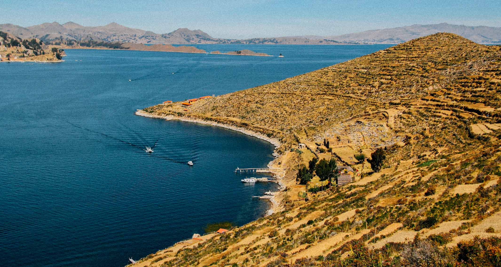

Galeria


A Ilha do Sol (ou Isla del Sol, em espanhol) é um lugar mágico e cheio de história, localizado no Lago Titicaca, na Bolívia. É um dos destinos mais místicos e sagrados da América do Sul, com paisagens de tirar o fôlego e muita importância para as culturas pré-colombianas — especialmente os incas.
Você pode chegar à Ilha do Sol através de barco partindo da cidade de Copacabana, na Bolívia. A travessia leva cerca de 1 hora e oferece uma vista maravilhosa do Lago Titicaca.

Para saber mais, visite nosso perfil no Instagram.